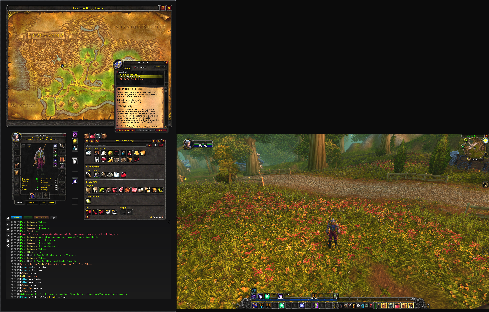

Persistent real-time World Map GPS navigation, unblocked Character, Quest, Spellbook, and Talent panels, bag docks, and addon interfaces that stay open while moving—with zero frame mutual exclusion.
Clean, uncompromised 3D camera viewport locked to native 16:9 / 21:9 coordinates. No horizontal fisheye stretching, centered camera angle, with combat HUD, unit frames, and action bars right where you need them.
Engineered for Dual-Screen Gameplay
Designed specifically for WoW players running dual monitors, whether matching screens or asymmetrical portrait + landscape.
1:1 Aspect Ratio Lock
Mathematically isolates 3D viewport coordinates to your primary gaming monitor. Prevents the severe horizontal stretching, camera distortion, and bezel-splitting caused by raw desktop spanning.
Persistent Secondary Workspace
Turns your second display into an expansive workspace. Keep your World Map, bags, character sheet, and quest log open simultaneously without frames fighting for screen space or closing when you walk.
1-Click Auto-Configuration
Type /offhand in-game. The built-in setup wizard inspects your display resolution, detects primary monitor orientation, and configures viewport anchors automatically in seconds.
Combat Safe & Taint Free
Built strictly within Blizzard's secure execution environment. Layout transitions and frame repositioning are deferred safely during combat, ensuring zero Lua taints or UI errors.
Universal Display Support
Works seamlessly with asymmetrical setups—including vertical portrait secondary screens (1440x2560), mixed resolutions (4K + 1440p, 1440p + 1080p), and mixed refresh rates.
Lightweight Windows Companion
Includes an optional, open-source Windows companion app (Offhand.exe) to borderless-span your game window in a single click without complicated GPU surround setups.
Get Started in 3 Simple Steps
No complex configuration required. Get up and running in under two minutes.
Install the Addon
Install Offhand via the CurseForge App, WowUp, or manually extract the Offhand folder into your World of Warcraft\_classic_era_\Interface\AddOns\ directory.
Span Your Game Window
Set World of Warcraft to Windowed mode, then launch the lightweight Offhand Companion (Offhand.exe) and click Span WoW Window Now (or use your preferred borderless tool).
Auto-Configure In-Game
In game chat, type /offhand and click 1-Click Auto-Configure. Offhand automatically detects your displays and anchors your 3D gaming viewport.
Frequently Asked Questions
Direct answers to common questions about safety, compatibility, and setup.
How do I set World of Warcraft into Windowed mode?
Offhand requires World of Warcraft to run in standard Windowed mode so the window can span freely across your dual displays. You can set this in three ways:
- In-Game Menu: Press Esc → click Options (or System in Classic) → under Graphics, set Display Mode to Windowed → click Apply.
- Keyboard Shortcut: While World of Warcraft is active and focused, press Alt + Enter to immediately toggle between fullscreen and windowed mode.
-
Config.wtf File: If you cannot open the game, open your
WTF\Config.wtffile in Notepad and add or edit the line:SET gxWindow "1".
Does spanning World of Warcraft stretch or distort the 3D camera?
No. Offhand uses native Blizzard viewport coordinate APIs to constrain 3D camera rendering strictly to your primary monitor's pixel bounds. Your camera aspect ratio and field of view remain native 1:1, completely eliminating horizontal fisheye distortion.
Is the desktop companion app required?
No. The companion app (Offhand.exe) is an optional convenience tool to borderless-span your game window in one click. You can also use GPU driver spanning (NVIDIA Surround, AMD Eyefinity) or utilities like Borderless Gaming and DisplayFusion.
Does it work with different monitor sizes and vertical screens?
Yes. Offhand is specifically engineered for asymmetrical multi-monitor setups, including vertical portrait monitors alongside ultrawide or standard landscape gaming monitors, with independent refresh rate handling.
Is Offhand safe and compliant with Blizzard's Terms of Service?
Yes, 100%. The in-game addon is pure Lua using Blizzard's official UI frame and viewport APIs. The companion app is fully open source and merely positions the Windows desktop window—it does not inject code, read game memory, or automate player actions.
Which versions of World of Warcraft are supported?
Offhand is built and tested for World of Warcraft Classic Era (1.15.x), Hardcore, and 20th Anniversary Classic realms, with underlying architecture compatible with modern Retail.